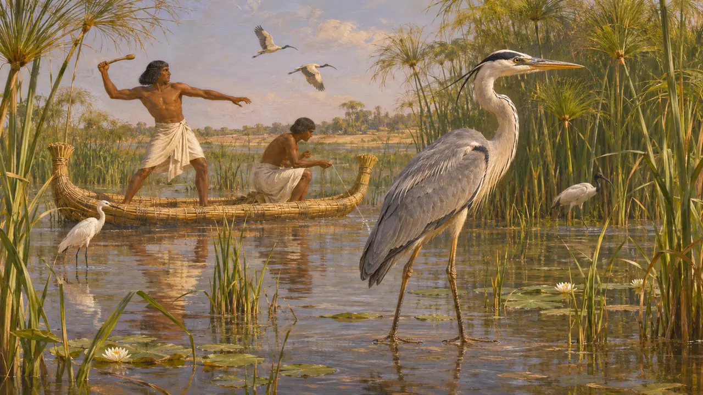
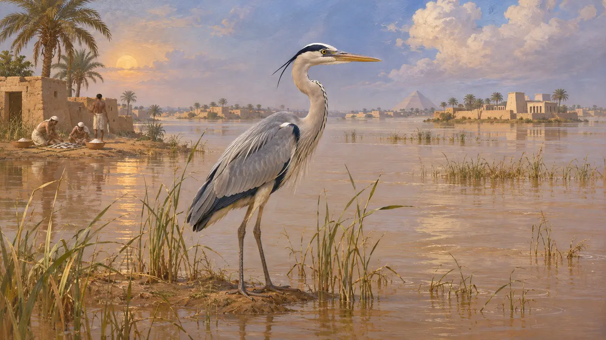
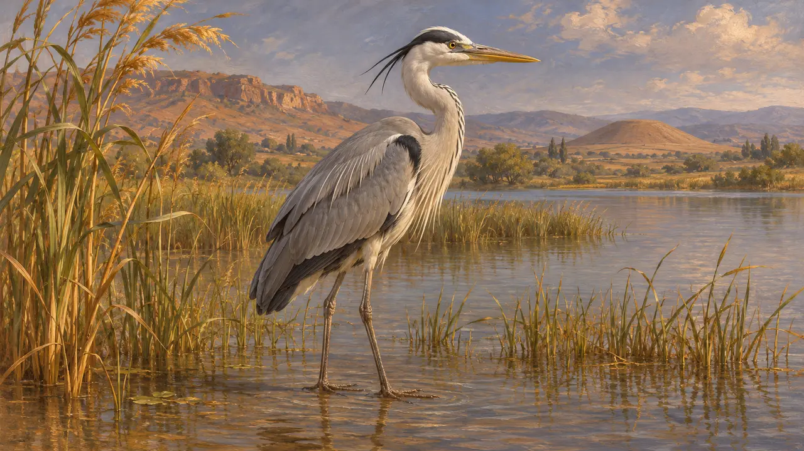
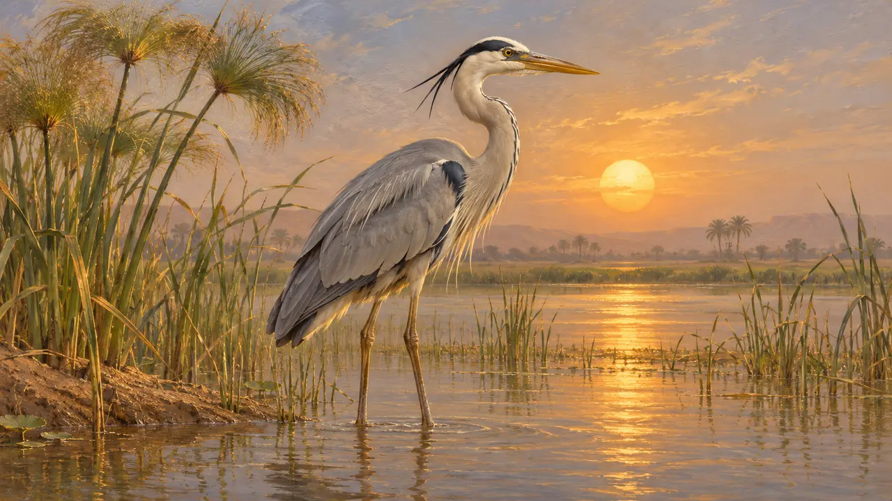

Encyclopedia › Wildlife and weather

The heron
Grey heron of the Nile marsh and the Anatolian river plains, 6th to 5th century BCE
In the game: Level 2: The Spear-bearer, Level 7: Sardis Burns
The grey heron is a wading bird of marsh edges and slow rivers, and it was at home in the Nile delta and valley and in the river plains of western Anatolia. Egyptian artists drew herons and other waders for thousands of years. For the Persian period itself the evidence is thin, and the Greek writers say little about the bird.
In the game: The game draws a grey heron as scenery on the marsh edges at Memphis and Sardis. No rule reads it.

Herons in Egyptian art
In the recordEgyptian tomb paintings and reliefs, many of them from the Old and New Kingdoms, show herons and other waders among papyrus thickets, in scenes where the tomb owner hunts birds or fishes. These images are far older than the Persian conquest of 525 BCE. They show the bird as part of the marsh in Egyptian eyes, but they do not date its presence at Memphis under Persian rule.
Egyptian tomb reliefs and paintings of the Old and New Kingdoms

The Nile flood and its birds
Ancient accountHerodotus describes the Nile in flood turning the land into a sea with only the towns standing out like islands. He also says that Egyptians ate some birds and fish raw after salting them. He does not name the heron in these passages, so a heron at Memphis is an inference from the habitat.
Herodotus 2.97

Sardis and its wetlands
Ancient accountHerodotus places the Gygaean lake close to Sardis, near the great tomb of Alyattes. Wetland of this kind would suit herons, though no ancient writer names them there. The bird at Sardis rests on the landscape, not on a recorded sighting.
Herodotus 1.93

The bennu and the absence of Persian evidence
DisputedThe Egyptian bennu bird, linked with the sun and rebirth, is usually drawn as a heron-like bird, and many Egyptologists identify it with a heron, though the identification is an interpretation. No Persian royal inscription or administrative text known to this entry names the heron. Whether Persian courtiers hunted or kept waders in royal parks is not documented.
Egyptian bennu imagery, as discussed in modern studies of Egyptian religion
Sources
- Herodotus 2.97
- Herodotus 2.77
- Herodotus 1.93
- Egyptian tomb reliefs and paintings of the Old and New Kingdoms